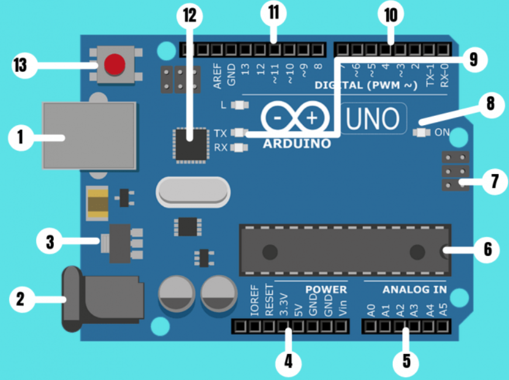

Arduino es una plataforma de hardware y software libre utilizada para crear proyectos de electrónica y robótica. Se compone de una placa de circuito impreso con un microcontrolador, así como de un entorno de desarrollo integrado (IDE) que permite escribir, compilar y cargar código en la placa. La plataforma Arduino se ha vuelto muy popular debido a su facilidad de uso, bajo costo y gran cantidad de recursos en línea.
Arduino Uno es una de las placas más populares de la plataforma Arduino. Se basa en el microcontrolador ATmega328P de la empresa Microchip, que cuenta con 14 pines de entrada/salida digital y 6 pines de entrada analógica. La placa también incluye un cristal oscilador de 16 MHz, un puerto USB, un conector de alimentación y un botón de reset. Arduino Uno es una placa versátil y fácil de usar que ha sido utilizada en una amplia variedad de proyectos, desde sensores y dispositivos de control hasta robots y sistemas de automatización (Yúbal Fernández, 2024).
Partes de la placa Arduino

La placa de Arduino tiene una familia de microprocesadores bastante extensa compuesta de diferentes modelos y variaciones. En esta ocasión describiré las partes de Arduino UNO que no difiere mucho de los otros modelos para que os podáis hacer una idea de la estructura de la placa electrónica (Hardware).
Alimentación USB/5VDC (1 y 2):
El Arduino UNO puede ser alimentado desde un cable USB de tipo B o mini procedente de tu ordenador o desde una fuente de alimentación entre 6V y 18V. En la imagen de arriba, la conexión USB está etiquetada (1) y el conector de la fuente de alimentación (2).
Además, la conexión USB sirve para cargar código en la placa de Arduino desde donde se pueden enviar datos de la programación e instrucciones a la placa.
Regulador de voltaje (3):
El regulador de voltaje controla la cantidad de voltaje que se deja entrar en la placa de Arduino; por lo que no dejará pasar un voltaje superior al establecido que podría dañar el circuito.
Conexiones (4):
Los pines o conexiones de Arduino se utilizan para conectar los cables que se van a necesitar para construir un circuito. Este tipo de conexiones tiene varios pines, cada uno de los cuales está impreso en la placa y se utilizan para diferentes funciones:
- Reset: Permite el reseteo del micro controlador.
5V y 3.3V: la clavija de 5V suministra 5 voltios de energía, y la clavija de 3.3V suministra 3.3 voltios de energía. La mayoría de los componentes simples usados con el Arduino funcionan bien con 5 o 3.3 voltios.
- GND: Hay varios pines GND en Arduino, se usan para conectar a tierra el circuito.
- VIN: Se usa para conectar la alimentación de la placa con una fuente externa de entre 6 y 12VDC.
Puertos de entrada Analógicos (5):
El área de pines bajo la etiqueta ‘Analog In’ (A0 a A5 en la UNO) son los pines de entrada analógica. Estos pines pueden leer la señal de un sensor analógico y convertirla en un valor digital que podemos leer e interpretar.
Micro-controlador Atmega 328 (6):
Esta zona de la placa es el circuito integrado que actúa como cerebro/procesador de la placa de Arduino sobre el que vamos a implementar la programación.
Entrada ICSP (In Chip Serial Programmer) (7):
Esta entrada realiza la función de acceso directo para grabar, desde el PC al circuito, cualquier programa sin necesidad de utilizar el puerto USB.
Indicador LED de alimentación (8):
LED de encendido de la placa de Arduino que indica si el microprocesador esta activo.
LED TX RX (9):
TX es la abreviatura de transmisión de datos y RX es la abreviatura de recepción de datos. Estas marcas comunes aparecen con regularidad en la electrónica para indicar los pines responsables de la comunicación serie. Así mismo, Estos LED se activan visualmente cuando la placa esta recibiendo o transmitiendo datos.
Puertos Digitales (10):
Estos pines se pueden utilizar tanto para la entrada digital (como para indicar si se pulsa un botón) como para la salida digital (como para alimentar un LED).
Puerto de conexiones (11):
- 5 entradas o salidas auxiliares (de la 8 a la 12).
- 3 salidas 9, 10 y 11 que permiten la modulación por ancho o de pulso.
- Salida 13 que sirve para conectar un led directamente a tierra.
- Salida a tierra GND.
- Pin AREF que se utiliza para fijar una tensión de referencia externa (entre 0 y 5 voltios) como límite superior de las clavijas de entrada analógica.
Chip de Arduino (12):
Permite identificar un dispositivo USB por el ordenador, es como su tarjeta de identificación o D.N.I. personal
Botón de RESET (13):
Al presionarlo, conectará temporalmente el pin de reset a tierra y reiniciará cualquier código que esté cargado en el micro-controlador de Arduino.